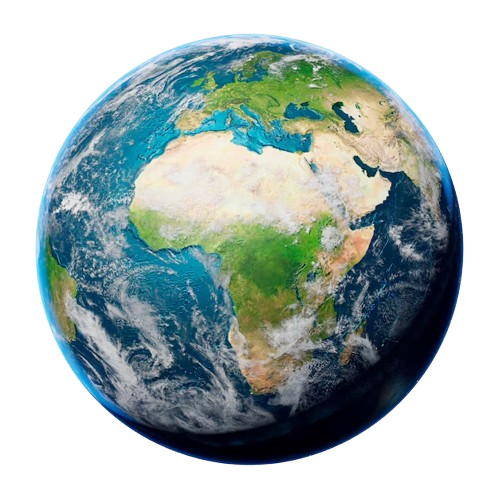

الأرض هو الكوكب الثالث من الشمس ويعتبر الكوكب الوحيد المعروف الذي يدعم الحياة. يتكون سطحه من اليابسة والمياه، حيث تغطي المحيطات حوالي 71% من مساحته. يمتلك الأرض غلافًا جويًا غنيًا بالأكسجين، مما يساعد في وجود الحياة.
يدور الأرض حول نفسه كل 24 ساعة تقريبًا، مما يسبب تعاقب الليل والنهار، ويستغرق حوالي 365 يومًا لإكمال دورة واحدة حول الشمس. يتميز الأرض بتنوع البيئات والمناخات، مما يدعم مجموعة متنوعة من الكائنات الحية.
